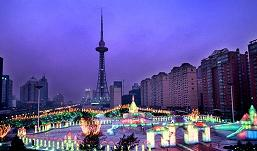

金桂圆冬景

中国哈尔滨 www.harbin.gov.cn
日期：2010.8.29
昨天，副市长张少良会见了来哈参加2010第五届中国黑龙江·北大荒国际农业机械展览会的美国林赛公司总裁大卫·唐宁一行。
据介绍，林赛公司自创建以来，一直致力于节水灌溉系列产品的研发与制造，目前已成为全球最大的大型节水灌溉设备生产商 之一。张少良在会见时说，哈尔滨市正致力于提高农业机械化和现代化水平，其中亟须提高的就是农业的科技含量和种植水平，包括 农田对水资源的合理利用等。哈尔滨“北跃”战略中的农机产业园和现代农业示范区项目，也需要与全球先进农业机械企业合作。希望双方 在未来有更多合作的可能性，进而推进哈市农业大发展。 又讯 昨晚，市政府在新巴黎大酒店举行招待晚宴，欢迎前来参加本届中国黑龙江·北大荒国际农业机械展览会的中外客商，副市长张少良出席晚宴并致词。
据介绍，林赛公司自创建以来，一直致力于节水灌溉系列产品的研发与制造，目前已成为全球最大的大型节水灌溉设备生产商 之一。张少良在会见时说，哈尔滨市正致力于提高农业机械化和现代化水平，其中亟须提高的就是农业的科技含量和种植水平，包括 农田对水资源的合理利用等。哈尔滨“北跃”战略中的农机产业园和现代农业示范区项目，也需要与全球先进农业机械企业合作。希望双方 在未来有更多合作的可能性，进而推进哈市农业大发展。 又讯 昨晚，市政府在新巴黎大酒店举行招待晚宴，欢迎前来参加本届中国黑龙江·北大荒国际农业机械展览会的中外客商，副市长张少良出席晚宴并致词。
( 来源：哈尔滨日报 2010-08-29)